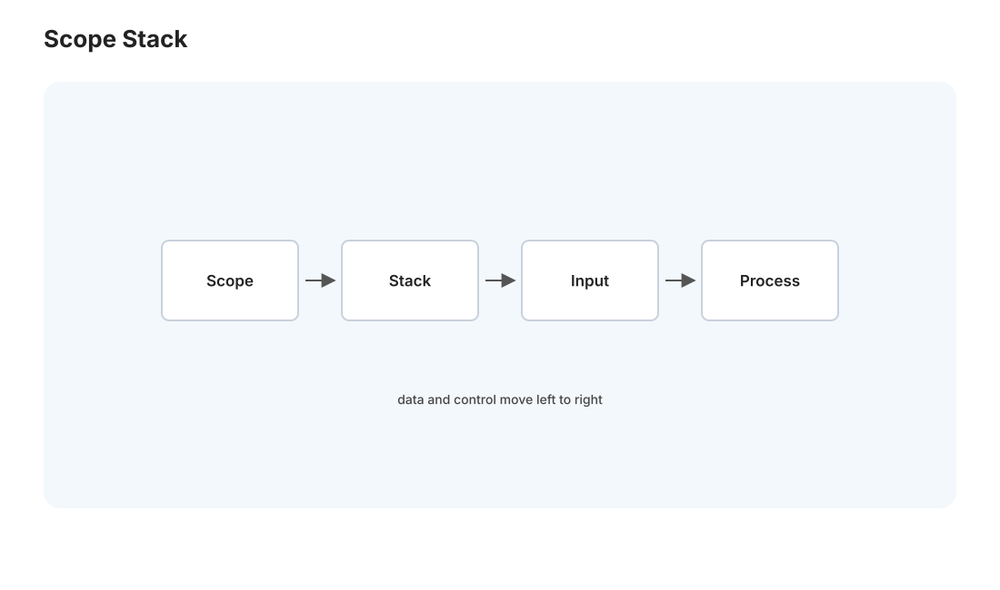
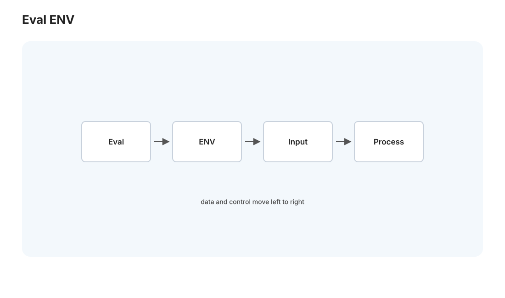
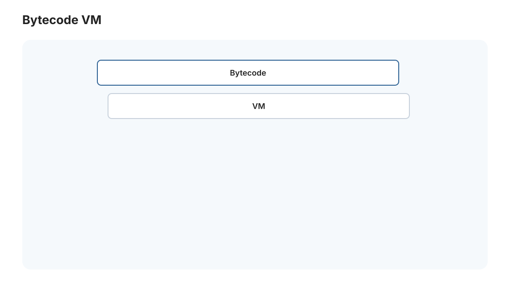

编译 II · 语义、类型检查与解释器
对标：Stanford CS143 中段 / Crafting Interpreters / TAPL（类型）｜ 前置：comp-01（AST）、pl 线（类型系统正式版在 pl-01） 有了 AST（comp-01），编译器要开始理解程序的意义：名字指向什么（作用域）、类型对不对（类型检查）、然后要么直接执行（解释器）、要么继续编译（comp-03）。这一页讲语义分析与类型检查，并把 [实验 L04] 的解释器完整跑起来——你将拥有一门自己实现的、能跑的小语言。
1. 语义分析：名字与作用域

语法对了不代表有意义——x + 1 里 x 是谁？语义分析在 AST 上回答这类问题：
- 符号表与作用域：维护"名字 → 声明"的映射，进入
{}块 / 函数时压入新作用域、离开时弹出——作用域是一个栈（🔗 与 csapp-03 调用栈、os 的栈同构）。词法作用域（lexical scope）：一个名字指向它在源码文本中所处位置能看到的最近声明——这是几乎所有现代语言的规则，也让"看代码就能确定 x 是谁"成为可能。 - 名字解析：把每个变量引用绑定到它的声明。未声明就用 = 错误、重复声明 = 错误——这一步抓出一大类程序错误。
- 闭包的关键：函数能"记住"它定义时所在的作用域（捕获外层变量）——这是 [L04] 要实现的、也是函数式编程（pl-02）的核心。闭包 = 函数 + 它捕获的环境。
2. 类型检查：在运行前抓错
类型系统给每个表达式一个类型，检查操作是否合法（"abc" + 3 该不该报错？）——在程序运行前排除一整类错误。这是"用编译期的严格换运行期的安全"，静态类型语言（Rust/Java/TS）的核心价值。
类型检查怎么做【机理】：在 AST 上自底向上推导——字面量有已知类型，e1 + e2 要求两子式类型相容并给出结果类型，if 要求条件是布尔、两分支类型一致，函数调用检查实参与形参类型匹配。本质是一组"类型推导规则"在语法树上的递归应用（pl-01 会把它形式化成推理规则 \(\frac{\text{前提}}{\text{结论}}\)——你会看到它和逻辑证明系统同构，Curry–Howard 的伏笔）。
静态 vs 动态类型的权衡： - 静态（编译期检查）：早抓错、性能好（编译器知道类型可优化）、IDE 补全强——代价是要写类型、有时啰嗦。 - 动态（运行期检查，Python/JS）：灵活、写得快——代价是类型错误要跑到那行才暴露（Medusa 的 Python 就是动态类型，所以你靠测试和运行时防错）。 - 类型推断（Hindley–Milner，pl-01 细讲）：既静态安全又不用手写类型（编译器自动推），鱼与熊掌兼得——ML/Haskell/Rust 的局部类型推断都源于此。
[L04] 的选择：小语言可以先做动态类型（求值时检查）跑通，理解了再考虑加静态检查——分步走，先让语言能跑，再让它更安全。
3. 树遍历解释器：让语言活起来

最直接的执行方式——遍历 AST，边走边算（tree-walking interpreter）：
- 求值
eval(node, env)：递归下降 AST——字面量返回其值、变量查环境env、e1 + e2先eval两子式再相加、if求值条件再选分支、函数调用创建新环境绑定参数再eval函数体。eval就是把 comp-01 画的那棵树"走一遍并计算"——干净得像数学归纳。 - 环境（environment）：名字 → 值的映射，链式结构表达嵌套作用域（查不到就往外层找）。闭包捕获的就是这个环境的引用。
- 控制流：
while/if靠eval的递归 + 循环实现；函数返回用异常或特殊返回值传递。
这就是 [L04] 的收官：词法（comp-01）→ 解析（comp-01）→ 求值（本页），你得到一个完整的、能跑的解释器——能定义变量、函数、闭包、递归、做算术和分支。亲手写完一门语言的解释器，是"编程语言不再神秘"的成人礼。《Crafting Interpreters》就是带你走这一遍。
4. 从树遍历到字节码（性能进阶）

树遍历解释器简单但慢（每次执行都遍历树、大量指针跳转、对缓存不友好）。生产级解释器（CPython、JVM、V8）多走字节码路线： - 编译成字节码：把 AST 一次性翻译成紧凑的字节码指令（一个线性的、类似汇编的中间表示）。 - 虚拟机（VM）执行字节码：一个循环取指令、执行——指令线性存放、对缓存友好、无重复遍历，快得多。 - 再进一步 JIT：运行时把热点字节码编译成真实机器码（V8、JVM 的 HotSpot）——解释的灵活 + 编译的速度。
这条"树 → 字节码 → JIT"的进阶路线，是性能与复杂度的阶梯——[L04] 停在树遍历（教学清晰），想深挖就往字节码走（《Crafting Interpreters》下半部正是做这个）。
5. 练习与要点
例 1（作用域推演） 写一段带嵌套函数和同名变量的代码，手推每个变量引用绑定到哪个声明（词法作用域）——理解"闭包捕获的是定义处的环境"，这是 L04 最易错的点。
例 2（类型检查手动跑） 给 if (x > 0) then 1 else "no"，按类型规则检查——两分支类型不一致（int vs string）应报错。体会"类型检查在运行前抓错"的价值。
例 3（把 L04 跑起来） 在你的解释器里定义一个递归的阶乘函数并调用——当 factorial(5) 打印出 120，你就真正拥有了一门自己造的语言。这是全站最有成就感的实验之一。\(\blacksquare\)
▶ 实验 L04 完成：
labs/L04-interpreter/全流程跑通——变量、函数、闭包、递归、算术、分支。对标《Crafting Interpreters》的 jlox。
下一页：编译 III——IR、优化与代码生成：编译器后端如何把程序变快、变成真实机器码。这也是 LLVM 的世界。